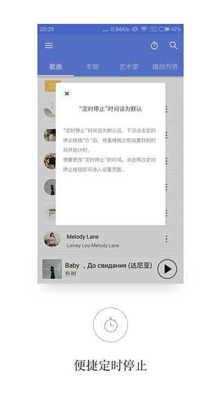

APlayer 新手入门：给你的网页装个音乐播放器，五分钟搞定
想在自己的网页里加个音乐播放器但完全不知道从哪下手？这篇从零带你把 APlayer 跑起来，从下载到播放第一首歌，再到歌词、列表、迷你模式三个核心功能，一次讲透。
这篇能带你从完全不懂到把 APlayer 跑起来——不需要你懂前端、不需要写过任何一行代码，跟着步骤抄就行。
它到底是干嘛的
想先看成品长啥样？去它的官网瞄一眼——用一句话说：APlayer 就是一段能嵌进你网页里的音乐播放器。
类比一下：如果你用过 WordPress 装音乐插件，那 APlayer 就是给所有类型网站用的"通用版播放器插件"。它不是那种要你注册账号、上传歌曲到人家服务器的在线播放器——所有文件都在你自己的网站上，APlayer 只负责一件事：把这些音频文件漂亮地播出来。
它能放 MP3、能播 HLS 直播流（就是那种 .m3u8 结尾的电台）、能同步 LRC 歌词、能切换迷你模式缩成一条贴在屏幕底部。而且整个库只有几十 KB，加载几乎不占时间。
简单来说，你给它几首歌的地址，它就给你一个能看能听的播放器界面。

五分钟上手：从下载到第一次播放
好，现在我们一步一步来。你只需要跟着做，不要跳步。
第一步：拿到文件
你需要两样东西：APlayer 本身（去下载拿最新版压缩包），以及——如果你想播 HLS 直播电台的话——hls.js。如果只放普通 MP3，hls.js 可以跳过。
第二步：把文件放进你的网站
最简单的做法：在你的网站根目录下建一个 libs 文件夹，把下载好的文件扔进去。比如：
你的网站/
├── index.html
└── libs/
├── APlayer.min.js
├── APlayer.min.css
└── hls.min.js （可选，只有播 .m3u8 才需要）第三步：在 HTML 里引入
打开你想放播放器的那个页面（比如 index.html），在 </body> 标签前面加这几行：
<link rel="stylesheet" href="libs/APlayer.min.css">
<script src="libs/hls.min.js"></script> <!-- 可选 -->
<script src="libs/APlayer.min.js"></script>注意一个细节：hls.js 必须写在 APlayer.js 前面。这个顺序不能反，反了会报错说 HLS 不支持。
第四步：写一段初始化代码
还是在这个 HTML 里，找个合适的位置放一个 <div> 当播放器的"容器"，然后实例化它：
<div id="aplayer"></div>
<script>
const ap = new APlayer({
container: document.getElementById('aplayer'),
audio: [{
name: '夜空中最亮的星',
artist: '逃跑计划',
url: 'songs/yezong.mp3',
cover: 'covers/yezong.jpg'
}]
});
</script>就这几行，你已经跑通了。浏览器打开这个页面，你会看到一个漂亮的播放器出现在 #aplayer 那个 div 的位置，点一下播放按钮就能出声。

上手后先玩这三个功能
跑通之后，你可以先试试这三个最常用也最有意思的功能——每一个都不需要额外装东西，改改参数就行。
功能一：切换迷你模式
默认的播放器是一块有封面、有进度条、有控制按钮的大卡片。但有时候你可能想让它缩成一条贴在屏幕底部，不占页面空间。
在初始化参数里加一行就行：
const ap = new APlayer({
container: document.getElementById('aplayer'),
mini: true, // ← 加这一行
audio: [{
name: '夜空中最亮的星',
artist: '逃跑计划',
url: 'songs/yezong.mp3',
cover: 'covers/yezong.jpg'
}]
});你会发现播放器瞬间变成了只有封面小图、歌名和一个播放按钮的细长条。这意味着你的页面主体内容不被播放器挡住，用户想听歌的时候点一下就能展开完整界面。
如果已经初始化好了想临时切换，也可以用 ap.setMode('mini') 切过去，再用 ap.setMode('normal') 切回来。
功能二：控制播放列表的折叠和高度
如果你加了不止一首歌——比如放了五六首组成一个播放列表——播放器会默认把所有歌曲都展开列出来。歌多的时候这个列表会变得很长。
两个参数可以救场：
const ap = new APlayer({
container: document.getElementById('aplayer'),
listFolded: true, // 列表默认折叠，只显示第一首
listMaxHeight: 200, // 展开后最多 200px 高，超出滚动
audio: [
{ name: '第一首', url: 'songs/1.mp3' },
{ name: '第二首', url: 'songs/2.mp3' },
// ... 更多
]
});listFolded: true 的效果是页面加载时列表只露出一行歌名，用户点一下列表按钮才展开。listMaxHeight: 200 则是给展开后的列表设一个上限——200 像素大约能同时看到 5 首歌，再多就会出现滚动条。两个参数可以自由组合，按你页面的空间来调。
功能三：跳转播放进度
这个功能在初始化之后用 API 调用——比如你想做一个"跳过前奏"按钮，点一下直接跳到第 10 秒：
document.getElementById('skip-btn').addEventListener('click', function() {
ap.seek(10); // 跳到第 10 秒
});seek() 方法接受秒数，可以是整数也可以是小数。ap.seek(0) 是重新从头开始，ap.seek(ap.audio.duration / 2) 是跳到一半位置。配合你自己写的按钮，就能实现各种快捷跳转。更多 API 用法可以去APlayer文档慢慢翻。
小白的三个常见疑问
跑起来之后你大概率会碰到下面这些问题，提前有个心理准备：
疑问一：HLS 流媒体加载失败怎么办
如果你用的是 HLS（.m3u8 格式，常见于电台直播），控制台可能会报 "HLS is not supported" 或者 "hls.js not found" 之类的错误。
最常见的原因是 hls.js 和 APlayer 的加载顺序反了——hls.js 必须先加载、APlayer 后加载，这个顺序不能搞反。其次是有没有在 audio 对象里声明 type: 'hls'——如果不声明，APlayer 会默认按普通音频处理，只有 Safari 能原生播放 m3u8，Chrome 和 Firefox 都会失败。
还有一些细的排查点：m3u8 文件本身能不能在浏览器直接打开？里面引用的 TS 分片路径对不对？跨域（CORS）头有没有配好？如果都没问题但还是播不了，再看看 hls.js 版本是不是太旧了——建议用 1.5.x 的稳定版。
疑问二：歌词不显示或者不滚动
如果你加了 LRC 歌词文件，发现歌词区域一片空白，先检查三件事：
lrcType参数有没有设为3（代表用文件方式读取歌词）audio.lrc指向的路径能不能在浏览器直接访问得到- LRC 文件是不是 UTF-8 编码
如果歌词能显示但不跟着滚动，那几乎肯定是时间戳格式不对。LRC 歌词的时间戳必须是 [mm:ss.xx] 这种格式，少一个方括号或者冒号位置错了都不行。
疑问三：自动播放为什么没反应
你可能写了 ap.play() 想让页面一打开就自动播，但发现按钮点了才出声——别担心，这不是你的代码写错了。
现代浏览器（Chrome、Firefox、Edge）几乎都默认阻止页面加载时的自动播放，尤其是带声音的自动播放。浏览器要求必须有用户交互（点击、触摸、按键）之后才能允许播放。所以正确的做法是：等用户点一下播放按钮再调用 ap.play()，或者干脆直接让用户自己点播放器界面上的按钮——APlayer 自带的播放按钮天然符合浏览器的交互要求。
Safari 稍微宽松一点，但也不是完全没有限制。如果你确实想做自动播放的体验，一般的做法是播放视频无声预览，用户一交互再切换到有声——但对大多数网站来说，直接让用户点播放按钮就够了。
好，现在你已经把 APlayer 跑起来了、玩了三个核心功能、也知道怎么排查常见坑。接下来的方向很简单：去翻翻它的完整参数列表——APlayer 能调的东西远不止这几个，从主题颜色到循环模式，从吸底固定模式到多首歌的顺序和随机播放，每一个参数都能让你的播放器更有个性。想深入研究的话，GitHub、Gitee、GitCode 都能找到完整的资料和示例代码。慢慢来，一个一个试，不急。